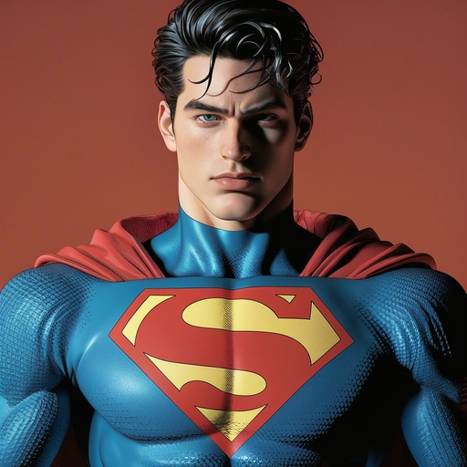
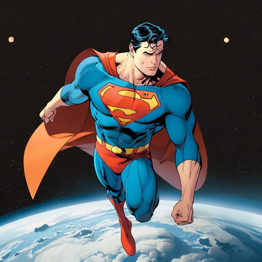
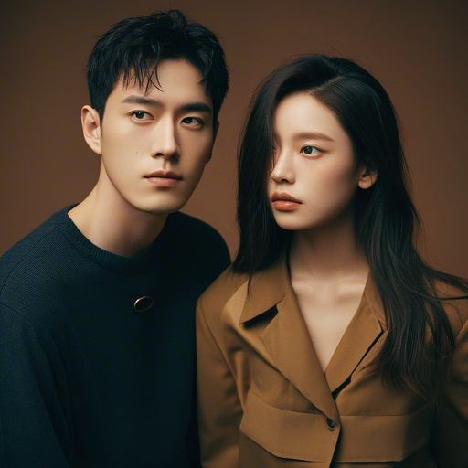
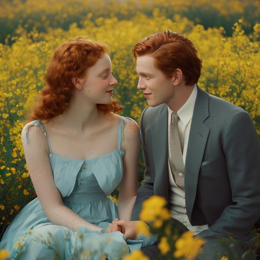
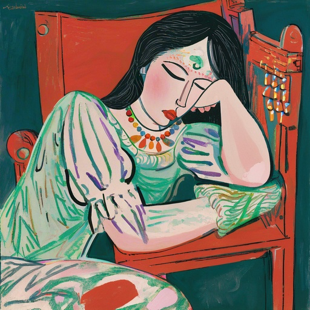
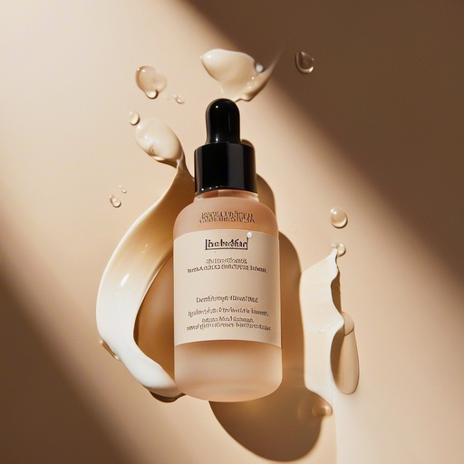

Project
Building an evaluation-driven prompt optimization system for real-world text-to-image generation.
1:1 — hover to reveal after
桌面端可悬停对比；双指长按或另设备上查看优化后效果。






Three layers of framing
System builder, not one-off prompt writer
Four interconnected modules